Software development with Vagrant¶
There is a neat new tool available for managing virtual machines: Vagrant!
Vagrant is a tool, written in Ruby, that creates a new VM and “provisions” that machine according to a set of files you set up on your host machine. I currently use Puppet as the provisioning tool in my Vagrant projects.
Vagrant uses specially prepared VM images, called “boxes”, with provisioning tools installed, and a set of standard configuration settings that let the machine wake up with minimal fuss. Users can then “clone” a copy of this basic configuration and provision that new image as needed. Creating a clone is fast enough that some users spin up a new machine for testing as part of a build procedure, then destroy the image when testing is done!
There are many box images available on the Internet, or you can build your own. These images can be downloaded automatically as we shall see.
Getting started¶
We can demonstrate this tool by installing Vagrant on a test system.
Prerequisites¶
Vagrant needs a VM system to manage. Currently the tool works best with VirtualBox, and there is a commercial version that works on VMware. We will use the free version.
Install VirtualBox¶
Download the Windows installer for VirtualBox:
Run this program to install VirtualBox on your system.
Testing the setup¶
This step is cool! Assuming you are connected to the Internet, open up a command prompt and do the following:
mkdir VMtest
cd VMtest
vagrant init precise32 http://files.vagrantup.com/precise32.box
vagrant up
When this sequence completes, you will have a running Ubuntu 12.04 32-bit server running on your machine. There will be nothing indicating that this machine is running, but it is. You can confirm this by running this command:
On systems with an SSH client installed (like Linux and Mac), you can access the machine using this:
vagrant ssh
Unfortunately, PC systems do not come with an SSH client, so you need to do a bit of configuration to get things running:
Install Putty tools¶
We need to install a few tools from the Putty collection. These are all simple executables that can be dropped into any directory on your system PATH.
Vagrant uses an SSH connection for communication. We need to set up the private key on the host machine so Putty can access the VM. To do this, we need to convert the key created by Vagrant into a form that will be accepted by Putty.
Start up the puttygen` program and select Load to load the insecure_privatekey file. This file can be found in your home directory (Something like C:\Users\username\.vagrant.d\isecure_private_key) Make sure you select All Files in the file type drop-down in the open dialog window that opens.
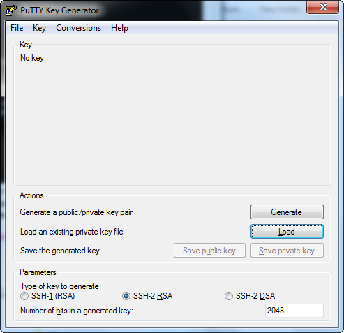Once the file has been loaded, you will see this:
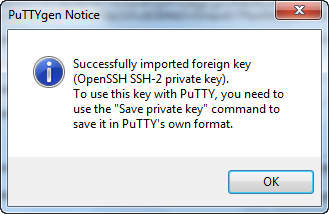Save the file with no pass-phrase
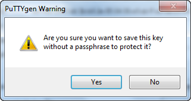I use vagrant.ppk for the file name. I keep this file in the same directory where the original insecure key was found.
Start Putty¶
Now run putty.
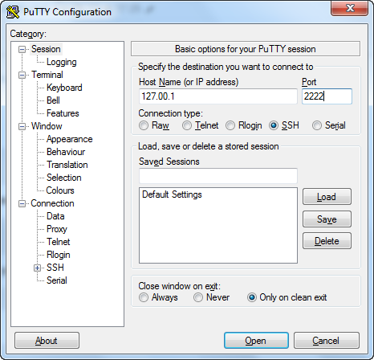We need to set in the IP address for the VM. Vagrant sets up the network so you can access port 2222 on the local host (127.0.0.1). Enter these values in this window.
Next, select Connection ‣ SSH ‣ Auth
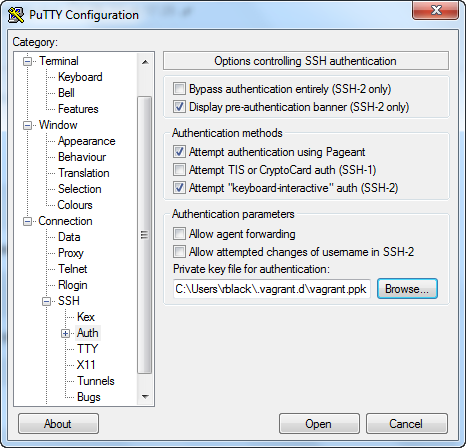Here, we need to tell putty to use the private key. Browse to this location and open the new file created earlier.
We will need to enter a user name so that Putty can log into the system. Navigate to Connection ‣ Data.
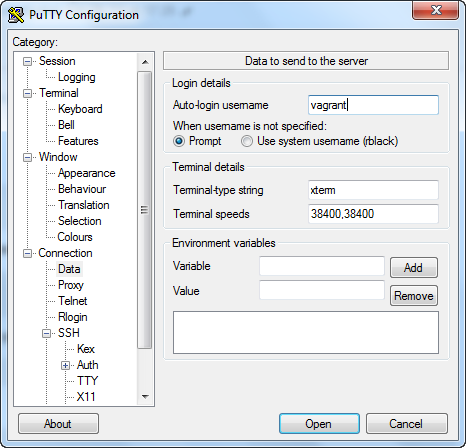The default user name is vagrant. (BTW, the user’s password is also vagrant, but we will not need that much!)
Finally, my poor eyes prefer black text on a white background, so I navigate to Window -> Colors
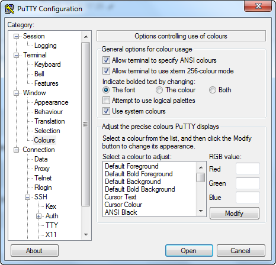Click on the use system colors check-box on this screen:
Go back to the Session tab and save these settings as something like “vagrant”. Then, you can load these setting the next time you run putty. Then select Open.
The first time you connect with this machine, you will see this window:
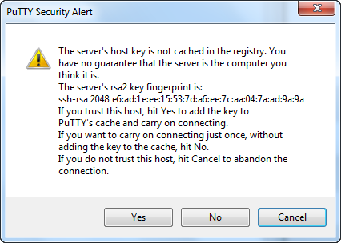You can trust this connection, so click on Yes. If all goes well, here is the console where we can use the new machine:
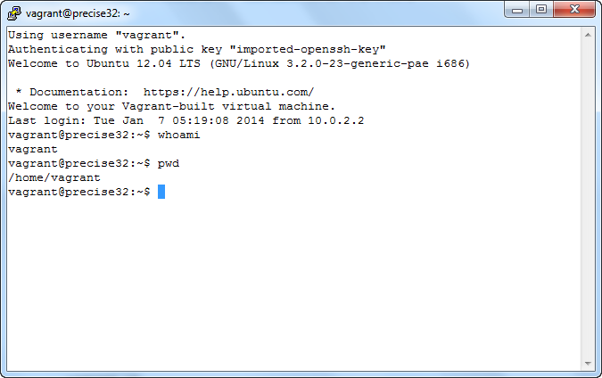Note
I ran two commands to verify that we are running as user vagrant and are now working in the default user’s home directory.
We can see the host directory by doing this:
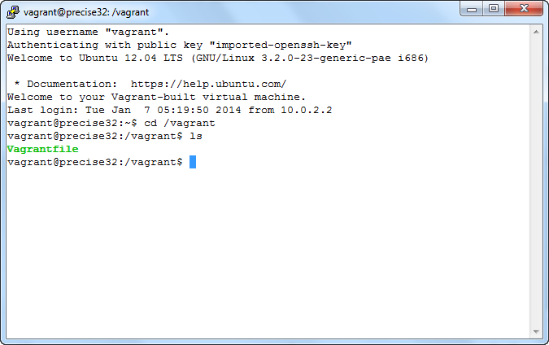Here, we see that the /vagrant directory has been mapped to the host directory where we ran the vagrant command. This lets us easily move files between the guest and the host, which is pretty handy.
Warning
There is one serious problem with simple moving files between PC and Linux this way. The line-ending differences between the two systems will not be handled, so it is up to you to deal with this!
Provisioning the guest¶
That much was pretty neat, but there is more to Vagrant. We will demonstrate using Puppet to set up the machine the way I need it set up for my COSC2425 class.
Puppet is a tool for managing the exact configuration of a machine. It can do most tasks a system administrator needs to do: create users, manage files and their contents, install programs, and much more.
Warning
This tool can be addictive. Since starting with it, I have used it extensively to manage my Linux and Mac systems. Sadly, Windows is not well supported (yet!)
We are not going to go into Puppet in detail here. This is intended to demonstrate how easy it can be to set up a new system, especially one inside a VM.
Puppet management files¶
Puppet uses a set of files located in standard places to control how it sets up a machine. This tool implements something called “configuration as software”. We are going to describe how the system should look, and let Puppet make that happen. We do not tell Puppet how to do any of this configuration.
First, create this directory structure (omit the other files for now):
puppet
|
+- manifests
| |
| +- site.pp
|
+- modules
|
+-vim
|
+-manifests
| |
| +-init.pp
|
+-templates
|
+-vimrc.erb
Create a new VagrantFile¶
The default VagrantFile created by the Vagrant tool is full of comments describing the various entries. I like to prune this to just the essentials. Here is the file needed to configure this machine for my COSC2425 class:
# -*- mode: ruby -*-
# vi: set ft=ruby :
VAGRANTFILE_API_VERSION = "2"
Vagrant.configure(VAGRANTFILE_API_VERSION) do |config|
config.vm.box = "precise32"
config.vm.box_url = "http://files.vagrantup.com/precise32.box"
config.vm.provision :puppet do |puppet|
puppet.manifests_path = "puppet/manifests"
puppet.manifest_file = "site.pp"
puppet.module_path = "puppet/modules"
end
end
Here is the initial site.pp file that controls the entire setup:
file { "motd":
path => "/etc/motd",
content => "Welcome to VMdemo",
}
include vim
include build
include nasm
This file will load additional “modules” which describe the setup for a single package. As an example, here is the file that installs vim on the system:
class vim {
package { "vim":
ensure => installed,
}
file { "/home/vagrant/.vimrc":
content => template("vim/vimrc.erb"),
}
}
This file will use a template to create a configuration file for vim. This configuration file is installed in the user’s hoe directory as .vimrc. Here is the template, located in puppet/modules/vim/templates/vimrc.erb
set tabstop=4
set shiftwidth=4
set expandtab
set nobackup
Once the new VM has been provisioned, you can start it up and verify that the needed tools are all in place:
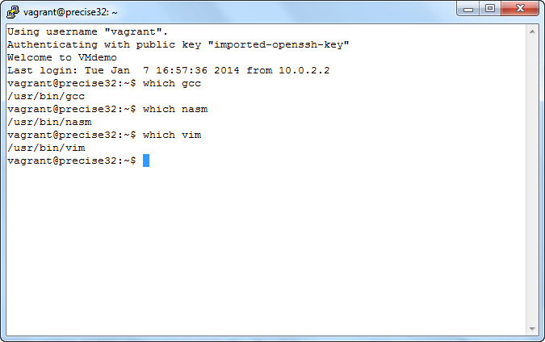Here, I checked that a major program from each package I installed is present and working. All I did to set this machine up was run vagrant provision from the command line while the machine was running. This is very nice!
More on Puppet¶
There are many resources available to learn more about puppet. The tool has a commercial version that is being used by many companies to manage thousands of systems. There are many modules available for downloading that will install just about any tool you can think of. Here is a link to the main site hosting these modules:
The complete set of files used for this demo, including the Vagrant demonstration files can be found on my GitHub account:
- Roie Black’s GitHub <https://github.com/rblack42/VMdemo>`_